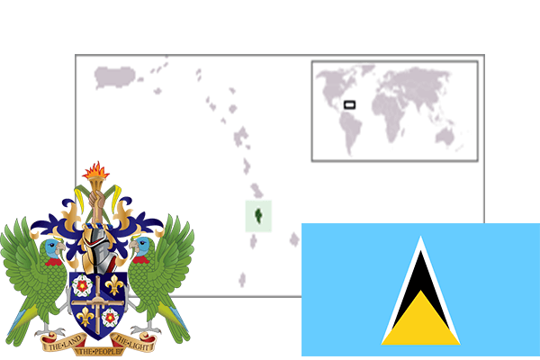

To`liq nomi: Sent Lyusiya
Region: Karib dengizi
Qonunchilik shakli: Konstitutsion monarxiya
Mustaqillik kuni: 22 fevral 1979
Poytaxt: Kastri
Maydoni: 616 km²
Chegaradosh davlatlari: Yo’q
Aholisi: 165 600
Aholi zichligi: 269 /км²
Aholining o`rtacha yoshi: 75,18 yil
Rasmiy tili: Ingliz tili
Dini: Xristian
Pul birligi: Sharqiy Karib dollari
Telefon prefiksi: +1
Internet domen: .lc
Xalqaro tashkilotlarga a`zoligi: BMT
Dengiz va okeanlarga chiqishi: Atlantika okeani
YIM: Butun: $1.4 (2017-yil) Jon boshiga: $8,135
Yirik shaharlari: Kastri, Gros Islet, Mikod